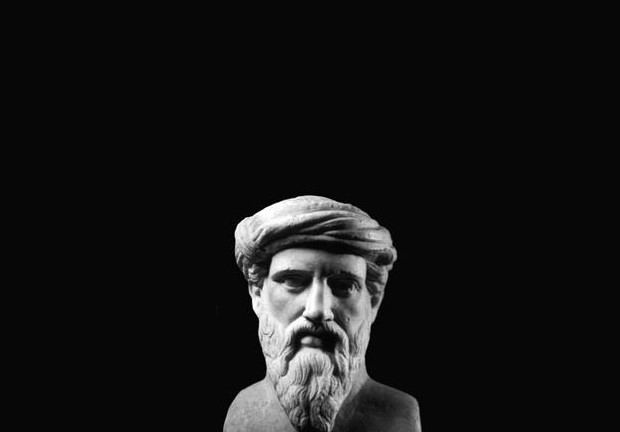
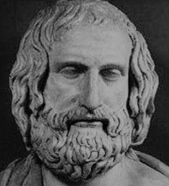
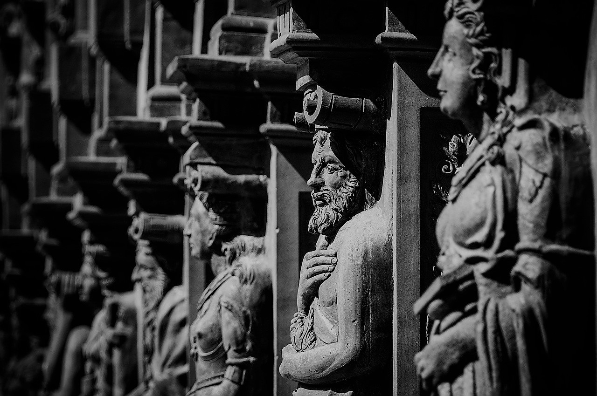
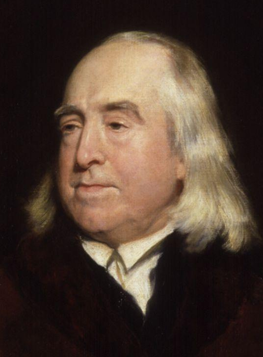
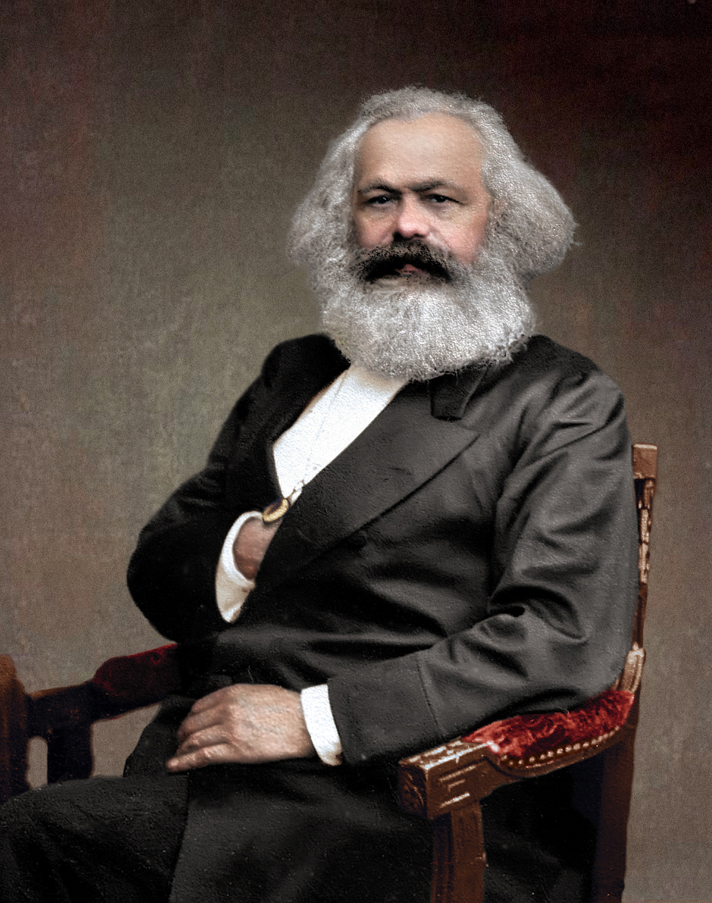

필로소피아(philosophia). 지혜를 사랑하는 것. 끊임없는 앎을 추구하는 과정이 지금의 철학이 된 것입니다.
DISCLAIMER
이페이지는 철학사의 모든 내용을 다루지 않습니다.
*Click bottom of the photo to read description*
INTO
THE PHILOSOPHY
BC 624-546
그리스 식민지 밀레투스 출신의 자연철학자.
그리스 7현인 중 한 명.
아리스토텔레스는 탈레스를 '철학의 창시자'라 칭했다.
정치와 기상, 치수공사, 항해술 등 여러 분야에 능했다.
*Arche(아르케) : 물
THALES OF MLETUS

BC 582-496
사모스 섬 출신의 철학자이자 수학자. 고국에서 정치 개혁에 실패한 후, 남이탈리아로 이주해 종교와 정치, 철학을 아우르는 철학 공종체를 결성했다.
영혼의 불사와 윤회를 믿었고, 금욕적인 삶을 살았다.
*Arche(아르케) : 숫자
피타고라스 학파
에페소스 학파는 모든 우주의 존재가 불이라 생각했던 고대 그리스 철학자 에페소스의 헤라클레이토스의 철학적 사상을 의미한다.
그에 따르면, 존유는 하나의 물질이나, 동시에 그는 그 세계의 지속적인 변화를 인정한다. 아르케요소 (불)의 운동은 심지어 화성 과정의 최종 결과라고 해도,
불협화음과 부조화이다.
에페소스 학파

소피스트는 고대 그리스의 특정 종류의 교사를 일컫는 말이다. 그리스어의 원래 의미는 '현자', '알고 있는 사람', '지식을 주고 가르치는 사람'이었으나 플라톤이나 아리스토텔레스에 의하여 '궤변가'라는 부정적 의미로 사용되었다
소피스트
소크라테스는 고대 그리스의 철학자이다. 기원전 469년 고대 그리스 아테네에서 태어나 일생을 철학의 제 문제에 관한 토론으로 일관한 서양 철학에서 첫번째 인물로 평가되고 있다
소크라테스(Sokrates)
플라톤은 다양한 서양 학문에 영향력 있는 그리스의 철학자이자 사상가, 객관적 관념론의 창시자이다. 그는 소크라테스의 제자, 아리스토텔레스의 스승이며, 대학의 원형인 고등 교육 기관 ‘아카데메이아’의 교육자이다.
플라톤(Platon)
아리스토텔레스는 고대 그리스의 철학자이자 박식가로, 플라톤의 제자이며, 알렉산더 대왕의 스승이다. 물리학, 형이상학, 시, 생물학, 동물학, 논리학, 수사, 정치, 윤리학, 도덕 등 다양한 주제로 책을 저술하였다.
아리스토텔레스(Aristoteles)
피론주의 또는 피론 회의주의는 기원후 2세기 후기 또는 3세기 초 섹스투스 엠피리쿠스가 기록한 게 남았고, 기원전 1세기 아이네시데모스가 설립한 회의주의 학파다. 이는 기원전 360년에서 270년 사이 살았던 철학자 피론의 이름을 따서 명명했다.
회의주의자
에피쿠로스 학파를 창시한 것은 신과 같이 추앙을 받던 에피쿠로스이다. 다수의 제자가 쾌락주의를 계승하여 그리스어로 논문을 쓴 필로데모스, 메트로도로스가 유명하다. 그러나 에피쿠로스설을 라틴어로 남김없이 철학시로 정리해 낸 로마의 시인 루크레티우스는 더욱 유명하다.
에피쿠로스 학파
스토아 학파라는 명칭은 제논이 아테네 광장에 있던 '스토아(서양 건축에서 줄지어 선 기둥으로 된 주랑을 의미함)'에서 제자들을 가르쳤다는 데서 유래하였다. 이 철학은 에피쿠로스 학파와 마찬가지로 헬레니즘 시대에 혼란에서 벗어나 평온한 삶을 추구하고자 하는 사회적 필요에 따라 등장하였다
스토아 학파
히포의 아우구스티누스 또는 히포의 성 아우렐리우스 아우구스티누스는 4세기 북아프리카인 알제리 및 이탈리아에서 활동한 기독교 보편교회 시기의 신학자이자 성직자, 주교로, 서방 기독교에서 교부로 존경받는 인물이다. 마르틴 루터와 장 칼뱅과 같은 종교 개혁가들에게도 큰 영향을 주었다
아우구스티누스(Augustinus)
Neuschwanstein Castle is a 19th-century historicist palace on a rugged hill above the village of
Hohenschwangau near Füssen in southwest Bavaria, Germany.

중세(中世, Medium aevum)는 유럽 역사에서 서로마 제국이 멸망(476년)하고 게르만 민족의 대이동(4세기-6세기)이 있었던 5세기부터 르네상스(14세기-16세기)와 더불어 근세(1500년-1800년)가 시작되기까지의 5세기부터 15세기까지의 시기이나 이 개념은 동양사에는 적용하기 어렵고 유럽 이외 지역에 '중세'가 있었는지도 학자에 따라 의견이 상충하지만 유럽 이외 지역에 '중세'가 없었다는 지극히 유럽 중심주의적인 의견도 존재한다.
In the history of Europe, the Middle Ages or medieval period lasted approximately from the late 5th to the late 15th centuries, similar to the post-classical period of global history. It began with the fall of the Western Roman Empire and transitioned into the Renaissance and the Age of Discovery.
중세(Medieval Europe)
토마스 아퀴나스는 서방교회의 저명한 신학자이자 스콜라 철학이다. 또한 자연신학의 으뜸가는 선구자이며 서방교회에서 오랫동안 주요 철학적 전통으로 자리잡고 있는 토마스 학파의 아버지이기도 하다
인식론에서 합리론(合理論, 영어: rationalism), 합리주의(合理主義) 또는 이성주의(理性主義)는 이성을 지식의 제일의 근원으로 보는 견해를 말한다. 합리론에서의 진리의 기준은 감각적인 것이 아니라 이성적이고 연역적인 방법론이나 이론으로 정의된다.
Rationalism
경험론이란 철학에서 감각의 경험을 통해 얻은 증거들로부터 비롯된 지식을 강조하는 이론이다. 합리주의가 인식 원천을 오직 이성에서만 추구하는 것과 대립한다. 경험론은 인식론으로 알려진 인간의 지식에 관한 학문 중 가장 널리 퍼진 관점이기도 하다.
Empiricism
이마누엘 칸트는 근대 계몽주의를 정점에 올려놓았고 독일 관념철학의 기반을 확립한 프로이센의 철학자이다. 칸트는 21세기의 철학에까지 영향을 준 새롭고도 폭 넓은 철학적 관점을 창조했다. 그는 또한 인식론을 다룬 중요한 저서를 출간했고, 종교와 법, 역사에 관해서도 중요한 책을 썼다.
임마누엘 칸트Immanuel Kant

공리주의는 19세기 이래 영국을 중심으로 발달한 윤리적 사상이다. 인간 행위의 윤리적 기초를 개인의 이익과 쾌락의 추구에 두고, 무엇이 이익인가를 결정하는 것은 개인의 행복이라고 하며, '도덕은 최대 다수의 최대 행복을 목적으로 한다.'고 주장한다. 이를 최대행복의 원리라고 부른다
공리주의
1770년 8월 27일-1831년 11월 14일 독일 관념론을 완성한 것으로 평가받는 프로이센의 철학자이다. 칸트의 이념과 현실의 이원론을 극복하여 일원화하고, 정신이 변증법적 과정을 경유해서 자연·역사·사회·국가 등의 현실이 되어 자기 발전을 해가는 체계를 종합 정리하였다.
해겔(Hegel)
쇼펜하우어는 1820년 대에 동양학자 프리드리히 마이어를 통해 힌두교와 불교에 관해 알게 되었다. 이 먼 과거의 동양 사상가들이 서양과는 전혀 다른 환경, 언어, 문화 속에서 근대적인 서양철학의 과제에 대해서 같은 결론을 말한다고 생각했다. 이 발견을 쇼펜하우어는 글로 써서 남겼고 서양에서 최초로 동양 철학의 세련된 점을 독자들에게 알려주었다. 쇼펜하우어는 서양 철학과 동양 철학 간의 유사성을 말한 철학자이자 자신이 무신론자임을 표명한 독창적인 철학자로 손꼽힌다. 19세기 말에 유행하여 수많은 사상가들에게 영향을 끼쳤다.
쇼펜하우어(Schopenhauer)

근대 사회과학의 분과학문들을 새롭게 창시하였고 자본론과 공산당 선언 등을 저술하였으며 19세기 중반부터 20세기 말까지 마르크스의 사상은 인류 전체의 사상과 철학, 사회, 문화, 외교, 정치, 경제 등의 방향성에 대해 지대한 영향을 끼쳤기에 매우 중요한 사상가로 지목된다.
카를 하인리히 마르크스 (Karl Heinrich Marx)
프리드리히 빌헬름 니체는 독일의 문헌학자이자 철학자이다. 서구의 전통을 깨고 새로운 가치를 세우고자 했기 때문에 '망치를 든 철학자'라는 별명이 있다.
프리드리히 니체 (Friedrich Nietzsche)
마르틴 하이데거는 독일의 철학자이다. 현상학, 해석학, 실존주의에 관해 20세기 가장 중요한 철학자 중 1명으로 평가받는다. 독일 시골의 가톨릭 가정에서 태어나 프라이부르크 대학교에서 신칸트주의와 에드문트 후설의 현상학을 공부하였으며, 심리주의에 관한 논문으로 박사학위를 취득하였다.
마르틴 하이데거 (Martin Heidegger)
제3대 러셀 백작 버트런드 아서 윌리엄 러셀은 영국의 수학자, 철학자, 수리논리학자, 역사가, 사회 비평가 다. 화이트헤드와 함께 《수학 원리》를 저술하여 수리논리학의 성립에 공헌하였으며, 이후 평화주의 운동과 저술활동에 참여하였다. 1950년 노벨 문학상을 수상하였다
버트런드 러셀 Bertrand Russel
조지 에드워드 무어는 영국의 철학자로, 버트런드 러셀, 루트비히 비트겐슈타인, 고틀로프 프레게 등과 함께 현대 분석 철학의 기초를 닦은 사람이다. 그는 윤리학에서 비자연주의를 주장했고, 철학적 방법론의 하나로 상식을 강조했다
무어 George Edward Moore
존 보들리 롤스(John Bordley Rawls)는 40년 동안 '정의' 한 주제만을 파고든 20세기 위대한 정치철학자 중 한명이자, 『정의론(A Theory of Justice)』의 저자이다.
롤스 (rawls)
아마르티아 쿠마 센은 인도의 경제학자이자 철학자이다. 1998년 아시아인으로서 최초로 노벨 경제학상을 받았다. 1953년 캘커타 대학교를 졸업한 후 케임브리지 대학교에서 박사학위를 받았다. 불평등과 빈곤 연구의 대가이며 후생경제학의 대표적인 학자로 경제학계의 테레사 수녀로 불린다.
아마르티아 센(Armatya Sen)
로버트 노직은 미국의 철학자이다. 무정부, 국가, 그리고 유토피아 >에서, 그는 존 롤스에 대항하는 자유지상주의 정치철학적 논의를 하였다. 그는 존 로크의 자연상태 논의를 빌려와 정치철학을 논하였다. 또한, 인식론에 기여하여, 지식이나 자유 의지에 대한 철학을 하였다
노직(Robert Nozick)
마이클 샌델은 미국의 정치철학자이다. 그는 온라인 수강이 가능한 하버드 교육 강의 'Justice'로 익히 알려진 바 있으며, 존 롤스의 정의론’을 비판한 ‘자유주의와 정의의 한계’를 발표하면서 세계적인 명성을 얻었다.
샌델(Sandel)
Reference book list
Socrates to Sartre: A History of Philosophy by Samuel Enoch Stumpf


.jpg)